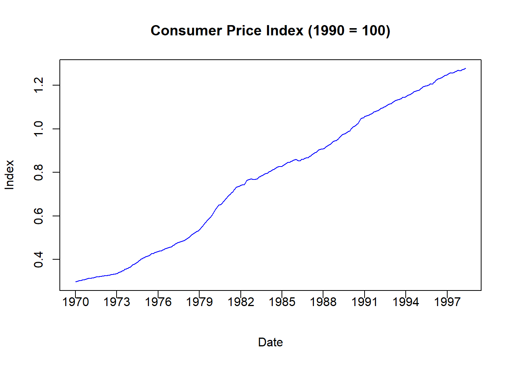
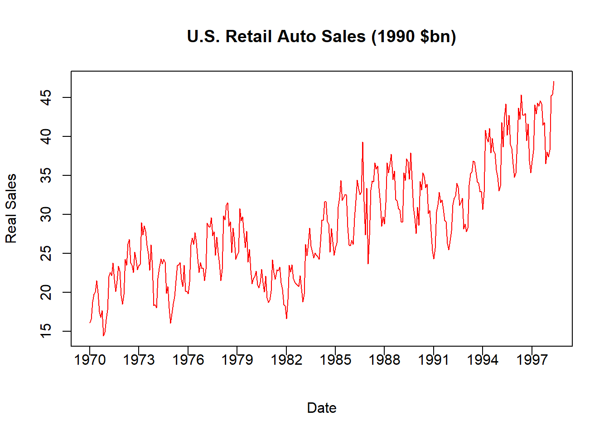

10.5 Another Concluding Application
Let us consider an in-depth application where dummy variables are essential for making time-series variables ready for analysis by removing a seasonal cycle.
Consider the following time series data:
library(readxl)
AUTO <- read_excel("data/AUTO_SA.xlsx")
plot(AUTO$INDEX,AUTO$AUTOSALE,
type = "l", main = "U.S. Retail Auto Sales ($bn)",
col = "blue", xlab = "Date", ylab = "Sales", xaxt = "n")
xtick <- seq(1,length(AUTO$INDEX), by = 36)
axis(side=1, at=xtick, labels = FALSE)
text(x=xtick, par("usr")[3],
labels = c("1970","1973","1976","1979","1982","1985",
"1988","1991","1994","1997"),
pos = 1, xpd = TRUE)
The figure illustrates retail automobile sales, denoted in billions of dollars, for the US between 1970 and 1998. As with most time series, this data is actually a combination of several components.
Trend: The long-term (i.e., average) increase or decrease in value over time.
Seasonality: The repeating (i.e., predictable) short-term cycle in the series caused by the seasons or months of the year
Random: The information in the series that is not due to a long-term trend or a short-term cyclical pattern is what we would actually like to explain.
Lets us decompose this series in several steps to not only give us more exposure to dummy variables, but to also learn a bit more about time series data.
Make a Nominal Series a Real Series
The auto sales series above is known as a nominal series because the dollar values for each time period are expressed in the prices of that time period. For example, the data indicates that the US had $4.79 billion in auto sales in January 1970 and $47.4 billion in January 1998. We cannot say that auto sales increased by ten times during this time period, because the US also experienced inflation during this time period. In particular, $4.79 billion is denoted in 1970 dollars while $47.4 billion is denoted in 1998 dollars. In order to remove any inflationary distortions from the data, we need to divide these numbers by some measure of how average prices have evolved. There are many ways of doing this, but a direct method is to use the consumer price index or CPI. The CPI tells us how average prices have evolved relative to a benchmark year that is set to 100 (or 1). If the CPI differs in a particular year, then we know how prices have changes relative to the benchmark year.
plot(AUTO$INDEX,AUTO$CPI,
type = "l", main = "Consumer Price Index (1990 = 100)",
col = "blue", xlab = "Date", ylab = "Index", xaxt = "n")
xtick <- seq(1,length(AUTO$INDEX), by = 36)
axis(side=1, at=xtick, labels = FALSE)
text(x=xtick, par("usr")[3],
labels = c("1970","1973","1976","1979","1982","1985",
"1988","1991","1994","1997"),
pos = 1, xpd = TRUE)
The figure above illustrates the CPI where 1990 is denoted as the benchmark year (because it is set to 1). All other time periods now have prices calculated relative to the benchmark. For example, the CPI in January 1970 is \(0.30\) which means that average prices were 70 percent lower than what they were in 1990.
We use the CPI to transform a nominal series into a real series. For example:
\[\mbox{Real Auto Sales} = \frac{\mbox{Nominal Auto Sales}}{\mbox{CPI}}\]
AUTO$RAUTO = AUTO$AUTOSALE / AUTO$CPI
plot(AUTO$INDEX,AUTO$RAUTO,
type = "l", main = "U.S. Retail Auto Sales (1990 $bn)",
col = "red", xlab = "Date", ylab = "Real Sales", xaxt = "n")
xtick <- seq(1,length(AUTO$INDEX), by = 36)
axis(side=1, at=xtick, labels = FALSE)
text(x=xtick, par("usr")[3],
labels = c("1970","1973","1976","1979","1982","1985",
"1988","1991","1994","1997"),
pos = 1, xpd = TRUE)
This figure now shows the Real US Auto Sales denoted in 1990 prices. For example, January 1970 experienced $16.15 billion in auto sales while January 1998 experienced $47.05. Now that these two numbers are both stated using the same price level, we can say that car sales increased by three times (not ten) over the time period.
Remove a Trend
Our real sales data still shows signs of both a trend and a seasonal cycle that need to be removed. Let us start by removing the trend.
Given that a trend is defined as the average change in a time series, we are technically attempting to identify (and remove) the average change in the series given a one-unit increase in time. Since this data is monthly, we are attempting to identify the average monthly change in the series. We can identify the trend with a regression equation.
## (Intercept) AUTO$TREND
## 18.37195789 0.05942082plot(AUTO$INDEX,AUTO$RAUTO,
type = "l", main = "U.S. Retail Auto Sales (1990 $bn)",
col = "green", xlab = "Date", ylab = "Real Sales", xaxt = "n")
xtick <- seq(1,length(AUTO$INDEX), by = 36)
axis(side=1, at=xtick, labels = FALSE)
text(x=xtick, par("usr")[3],
labels = c("1970","1973","1976","1979","1982","1985",
"1988","1991","1994","1997"),
pos = 1, xpd = TRUE)
lines(AUTO$INDEX,fitted(DTRND), col = "black")
The code above does three things. First, it creates a variable called TREND which is simply an increasing list of numbers from 1 (the first observation) to 341 (the last observation). Each increase is an additional month. Second, it runs a regression where real auto sales is the dependent variable while trend is the only independent variable.
\[Real\;Sales_t = \beta_0 + \beta_1 \; Trend_t + \varepsilon_t\]
The slope coefficient with respect to the trend is \(0.059\) which means that average auto sales increase by roughly \(0.06\) billion 1990 dollars each month on average. Finally, it plots the real series as well as our calculated trend together. Notice how the predicted sales coming from the trend line is straight - indicating how this is only the expected sales for a particular month given information only on the evolution of time.
Comparing these two lines in the figure should give you an idea how the trend gets removed from a time series. If we want to remove the predictable change in a series over time, then we can subtract these numbers from the original series once we estimate the trend. Note however that this is already done for you, because the residual of the above regression is actually the information in auto sales that cannot be explained by the predictable evolution of time.
AUTO$RAUTO_DT = residuals(DTRND)
plot(AUTO$INDEX,AUTO$RAUTO_DT,
type = "l",
main = "U.S. Retail Auto Sales (1990 $bn, Dentrended)",
col = "cyan", xlab = "Date",
ylab = "Real, Detrended Sales", xaxt = "n")
xtick <- seq(1,length(AUTO$INDEX), by = 36)
axis(side=1, at=xtick, labels = FALSE)
text(x=xtick, par("usr")[3],
labels = c("1970","1973","1976","1979","1982","1985",
"1988","1991","1994","1997"),
pos = 1, xpd = TRUE)
The above figure illustrates the detrended data, where negative numbers indicate that observations are below trend while positive numbers indicate that observations are above trend.
Remove Seasonality
The figure above still includes a seasonal component which needs to be removed. We will do this using dummy variables.
Identifying seasonality generally refers to the short-run average pattern observed in the series. Since this is monthly data, we would like to observe the average sales in each month. If this were quarterly series, we would like to observe the average sales in each season (summer, fall, winter, spring). We can identify these average amounts by using dummy variables to identify if each observation falls into a particular month.
The first step is to establish a benchmark month. This is essentially an arbitrary decision, so lets just go with December (i.e., the twelfth month of the year).
## # A tibble: 6 × 9
## INDEX YEAR MONTH DATE AUTOSALE CPI RAUTO TREND RAUTO_DT
## <dbl> <dbl> <dbl> <dbl> <dbl> <dbl> <dbl> <dbl> <dbl>
## 1 1 1970 1 1970 4.79 0.297 16.2 1 -2.28
## 2 2 1970 2 1970. 4.96 0.298 16.6 2 -1.88
## 3 3 1970 3 1970. 5.64 0.300 18.8 3 0.256
## 4 4 1970 4 1970. 5.98 0.302 19.8 4 1.16
## 5 5 1970 5 1970. 6.08 0.303 20.1 5 1.38
## 6 6 1970 6 1970. 6.55 0.305 21.5 6 2.77Note that our dataset already has a variable called month which identifies 1 as January, 2 as February, etc. This will make the creation of dummy variables very easy.
Since we want to break this data into 12 categories, then we will need to construct 11 dummy variables. One dummy variable will deliver a 1 every time the observation is in January (0 elsewhere), one dummy variable will deliver a 1 every time the observation is in February (0 elsewhere), and so on. We can do this by hand (which is tedious), or we can use a new package called fastDummies.
If you are using fastDummies for the first time, you will want to install it:
install.packages("fastDummies")This package is designed to accept a variable and construct dummy variables for however many categories it can identify. For example:
## [1] "INDEX" "YEAR" "MONTH" "DATE" "AUTOSALE" "CPI"
## [7] "RAUTO" "TREND" "RAUTO_DT" "MONTH_1" "MONTH_2" "MONTH_3"
## [13] "MONTH_4" "MONTH_5" "MONTH_6" "MONTH_7" "MONTH_8" "MONTH_9"
## [19] "MONTH_10" "MONTH_11" "MONTH_12"Note how the dataset AUTO now contains 21 variables when it previously contained 9. This is because the above lines of code created 12 new variables - a dummy variable for each month of the year (1-12). Since we are considering the 12th month as our benchmark, we simply do not include it in our regression.
DS <- lm(RAUTO_DT ~ MONTH_1 + MONTH_2 + MONTH_3 + MONTH_4 +
MONTH_5 + MONTH_6 + MONTH_7 + MONTH_8 + MONTH_9 +
MONTH_10 + MONTH_11, data = AUTO)
summary(DS)##
## Call:
## lm(formula = RAUTO_DT ~ MONTH_1 + MONTH_2 + MONTH_3 + MONTH_4 +
## MONTH_5 + MONTH_6 + MONTH_7 + MONTH_8 + MONTH_9 + MONTH_10 +
## MONTH_11, data = AUTO)
##
## Residuals:
## Min 1Q Median 3Q Max
## -8.3877 -1.8444 0.4071 2.3868 9.4046
##
## Coefficients:
## Estimate Std. Error t value Pr(>|t|)
## (Intercept) -3.2222 0.6231 -5.172 4.04e-07 ***
## MONTH_1 -0.5227 0.8735 -0.598 0.550014
## MONTH_2 0.5072 0.8735 0.581 0.561902
## MONTH_3 5.2955 0.8735 6.062 3.68e-09 ***
## MONTH_4 4.9933 0.8735 5.716 2.44e-08 ***
## MONTH_5 6.1152 0.8735 7.001 1.44e-11 ***
## MONTH_6 6.1181 0.8811 6.943 2.05e-11 ***
## MONTH_7 4.8101 0.8811 5.459 9.45e-08 ***
## MONTH_8 4.6222 0.8811 5.246 2.79e-07 ***
## MONTH_9 2.8030 0.8811 3.181 0.001607 **
## MONTH_10 3.1100 0.8811 3.530 0.000476 ***
## MONTH_11 0.8048 0.8811 0.913 0.361724
## ---
## Signif. codes: 0 '***' 0.001 '**' 0.01 '*' 0.05 '.' 0.1 ' ' 1
##
## Residual standard error: 3.297 on 329 degrees of freedom
## Multiple R-squared: 0.3468, Adjusted R-squared: 0.325
## F-statistic: 15.88 on 11 and 329 DF, p-value: < 2.2e-16The dummy variable coefficients presented above show how the average auto sales for a particular month differ from the benchmark month of December. For example, June sales (MONTH_6) are the largest above December on average with 6.12 billion, while January sales (MONTH_1) are actually lower than December average trend sales by 0.52 billion on average. However, note that the difference between June and December is significantly different from zero, while the difference between January and December is not.
plot(AUTO$INDEX,AUTO$RAUTO_DT,
type = "l",
main = "U.S. Retail Auto Sales (1990 $bn, Dentrended)",
col = "cyan", xlab = "Date",
ylab = "Real, Detrended Sales", xaxt = "n")
xtick <- seq(1,length(AUTO$INDEX), by = 36)
axis(side=1, at=xtick, labels = FALSE)
text(x=xtick, par("usr")[3],
labels = c("1970","1973","1976","1979","1982","1985",
"1988","1991","1994","1997"),
pos = 1, xpd = TRUE)
lines(AUTO$INDEX,fitted(DS),col = "gray")
The figure above compares the actual detrended series (composed of seasonal and random components) and the seasonal component estimated from our use of dummy variables. As with removing the trend, we can now remove the seasonal component by taking the difference between these two series or simply using the residuals of the regression (since this is the part of the series that cannot be explained by the repeating of months).
plot(AUTO$INDEX,residuals(DS),
type = "l",
main = "U.S. Retail Auto Sales (1990 $bn, Detrended and SA)", col = "purple",
xlab = "Date",
ylab = "Real, Detrended, and SA Sales", xaxt = "n")
xtick <- seq(1,length(AUTO$INDEX), by = 36)
axis(side=1, at=xtick, labels = FALSE)
text(x=xtick, par("usr")[3],
labels = c("1970","1973","1976","1979","1982","1985",
"1988","1991","1994","1997"),
pos = 1, xpd = TRUE)This final figure illustrates the random component of US auto retail sales once we removed price distortions, a long-run trend, and a seasonal cycle. What remains is the component that cannot be explained by these predictable (and uninteresting) things - and this is exactly what analysts what to explain with other more interesting variables (e.g., interest rates, exchange rates, bond prices, etc.). Notice how you can make out the two recessions that occurred during the time frame quite easily.